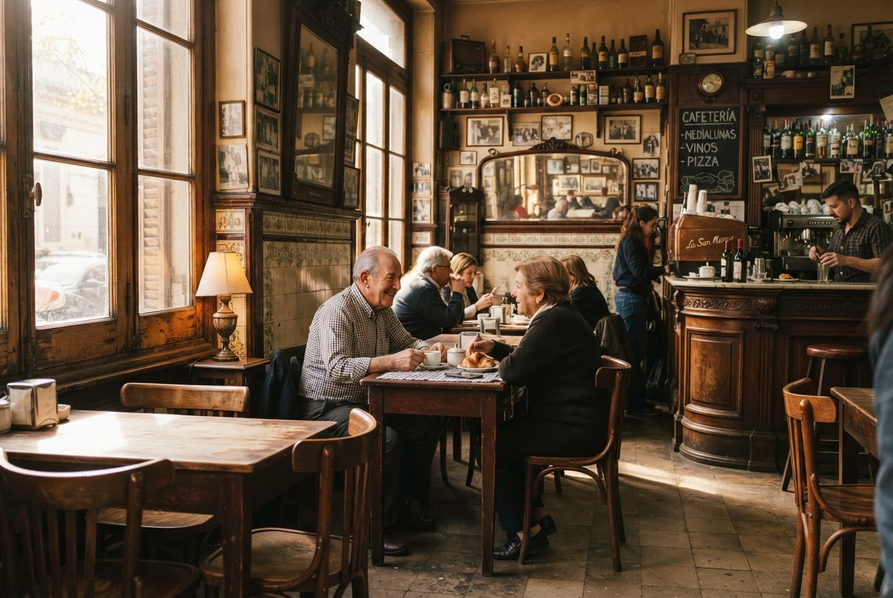
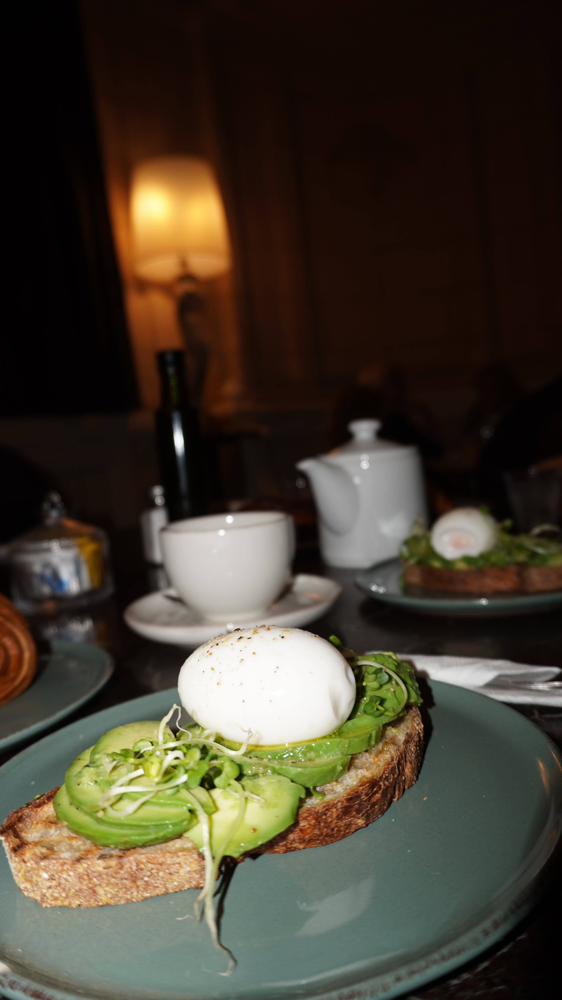
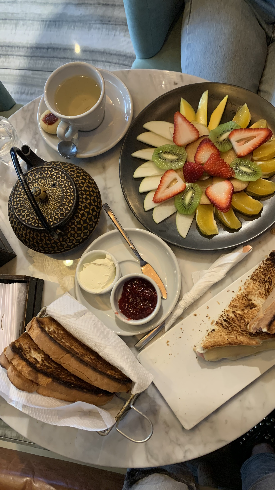

Cuándo ir
Preferí las horas de luz para las caminatas. Antes de salir, consultá los horarios oficiales de cada espacio y la programación del día.
GASTRONOMÍA
Sabores tradicionales que narran corrientes migratorias, sobremesas eternas y bodegones reinventados con amor local.
Empezar a recorrer

Sabores de la ciudad
La mesa porteña no tiene apuros. Esta propuesta de parada destacada incluye cafés, tostados, pastelería y mesas completas para compartir.

Los nombres “Lugar 1” a “Lugar 5” se conservan del prototipo para el review de contenido.
Defensa y Carlos Calvo, San Telmo
Sus puestos y circulaciones invitan a combinar el paseo con una pausa gastronómica. Observá la estructura del mercado y elegí qué sabores explorar sin apurar la visita.
Experiencia: Recorrido por puestos y degustación opcional.
Duración: 60 minutos estimados
Horarios: Los puestos pueden tener horarios diferentes; consultar antes de ir.
Acceso: Paseo por sectores abiertos; consumos a cargo del visitante.
Carlos Calvo 595, San Telmo
Una esquina para disfrutar la cultura del café y observar el mobiliario de un bar tradicional. La visita continúa el paseo por San Telmo con tiempo para conversar.
Experiencia: Pausa de café o comida, según carta vigente.
Duración: 45 minutos estimados
Horarios: Consultar atención y carta actual antes de salir.
Acceso: Consumo a cargo del visitante; consultar disponibilidad de mesas.
Chile 502, San Telmo
El café propone un cruce entre literatura y vida barrial. Una parada para leer, conversar y descubrir otra forma de habitar una mesa porteña.
Experiencia: Café y observación del espacio cultural.
Duración: 40 minutos estimados
Horarios: Consultar horarios de atención y actividades.
Acceso: Consumos no incluidos; verificar disponibilidad y accesibilidad física.
Av. de Mayo 825, Monserrat
Un café emblemático de la Avenida de Mayo. La propuesta se centra en observar su ambiente y disfrutar una pausa como parte del patrimonio cotidiano de la ciudad.
Experiencia: Café, merienda y observación del interior si hay lugar.
Duración: 45 minutos estimados, sin contar espera
Horarios: Consultar atención, reservas y espectáculos en el sitio oficial.
Acceso: Consumos y espectáculos se contratan al establecimiento.
Av. Rivadavia 3899, Almagro
La confitería permite combinar una merienda con la observación de vitrales y detalles ornamentales. Se propone como una segunda salida para disfrutar Almagro sin prisas.
Experiencia: Merienda y lectura de detalles del salón.
Duración: 60 minutos estimados
Horarios: Consultar horarios y carta vigente del establecimiento.
Acceso: Consumo a cargo del visitante; consultar reservas y necesidades alimentarias.
Preferí las horas de luz para las caminatas. Antes de salir, consultá los horarios oficiales de cada espacio y la programación del día.
Subte, colectivo y caminata. Combiná los tramos según tu ritmo y llevá tu tarjeta SUBE para los traslados.
Calzado cómodo, botella de agua y espacio para la sorpresa. Respetá las obras, los vecinos y los espacios que visites.